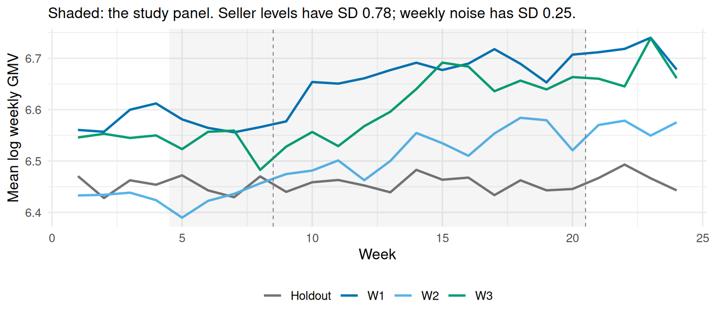
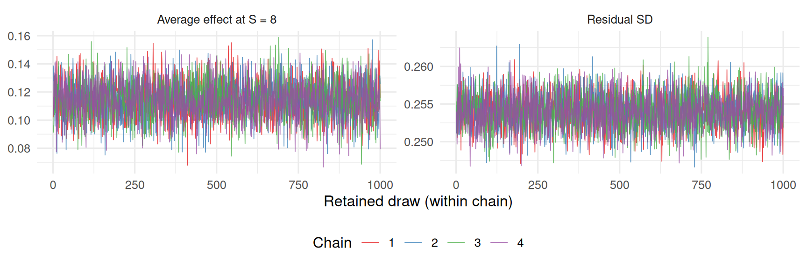
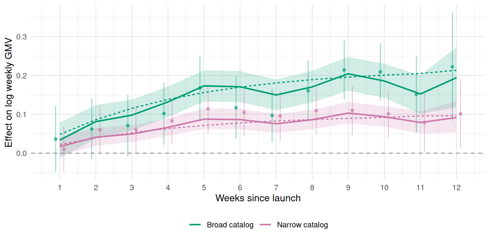
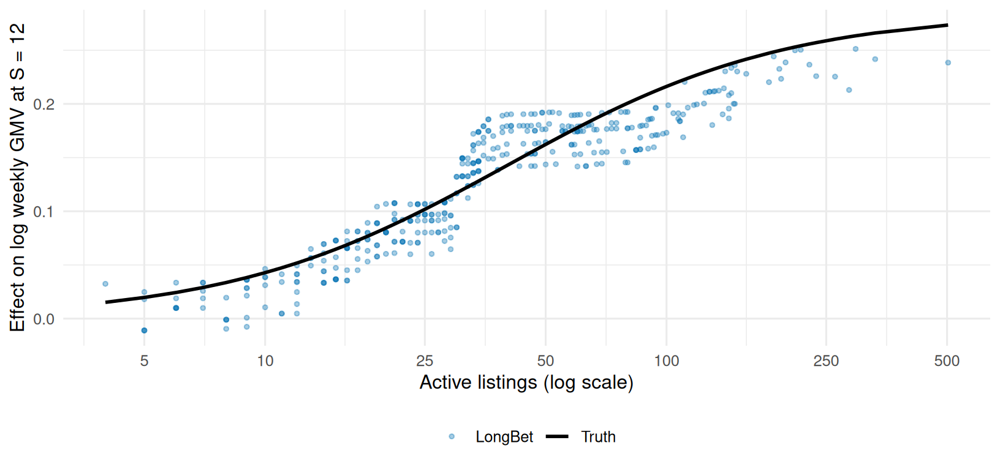

library(longbet)
library(dplyr)
library(tidyr)
library(tibble)
library(ggplot2)
library(purrr)
library(knitr)
source("R/longbet-common.R")
source("R/longbet-sim.R")
source("R/longbet-artifacts.R")
verify_longbet_environment()
theme_set(theme_minimal(base_size = 12))25 LongBet: Dynamic Treatment Effects in Staggered Rollouts
NoteLongBet chapter sequence
This is the first of six chapters on LongBet:
- LongBet: Dynamic Treatment Effects in Staggered Rollouts (this chapter): the model, a randomized rollout, the fit and its checks, the average effect against a design-based benchmark, and heterogeneity down to the individual seller.
- LongBet: From Effects to Decisions: dollar valuations, a ranked rollout under a capacity constraint, and a joint screen over three outcomes at once.
- LongBet and Modern Difference-in-Differences: the comparison a reviewer will ask for, against two-way fixed effects, Callaway and Sant’Anna, Sun and Abraham, and Borusyak-Jaravel-Spiess.
- LongBet: Forecasting and Observational Panels: projecting past the study window, adoption that was not randomized, where a unit’s level comes from, and covariates that move over time.
- LongBet: Ordinal Outcomes and Customer Experience: ordered ratings and the probability of hitting a customer-experience target.
- LongBet: Randomized Encouragement and Adoption Timing: when you can only invite people to adopt, and the decision is whom to invite.
25.1 Why a Trajectory, Not a Number

The models in the previous two chapters answer a question with no time dimension: what is the effect of the treatment on the outcome? In a business, that is rarely the whole question. A feature that lifts revenue by 10% in its first week and fades to nothing by its tenth averages about the same over a ten-week experiment as one that lifts revenue by 5% and holds there. They report the same average treatment effect. They are worth completely different amounts a year later, and they lead to opposite decisions.
They also rarely land on everyone equally. The same feature can be worth a quarter of a seller’s revenue to one account and nothing to another, and the difference is usually predictable from things you already know about them.
LongBet, introduced by Wang et al. (2024), extends the Bayesian Causal Forest family, including BCF (Hahn et al. 2020) and XBCF, to panel data, so the treatment effect becomes a function of two things at once: who the unit is, and how long it has been treated. It was designed for short panels with large cross-sections, the shape of data that e-commerce, subscription, and marketplace businesses generate by default.
25.2 The Model
For unit \(i\) in period \(t\):
\[ Y_{it} = \mu(X_i, t) + \beta_{S_{it}}\,\nu(X_i, t)\,\mathbf{1}\{S_{it} \ge 1\} + \gamma_i + \epsilon_{it}, \qquad \epsilon_{it} \sim \mathcal{N}(0, \sigma^2) \]
where
- \(Y_{it}\) is the outcome and \(X_i\) are pre-treatment covariates;
- \(S_{it}\) is unit \(i\)’s exposure, the number of periods since it was treated, and zero before that. Treatment is absorbing: once a unit is treated it stays treated;
- \(\mu(\cdot)\) is the prognostic forest, a sum of trees that predicts the untreated outcome;
- \(\beta_S\) is one Gaussian process over exposure, shared by every unit. It is where the model pools information about the shape of the response;
- \(\nu(\cdot)\) is the treatment forest, a second sum of trees that scales that shape up or down for each kind of unit, which is where heterogeneity in the size of the effect lives;
- \(\gamma_i \sim \mathcal{N}(0, \sigma^2_\gamma)\) is a unit intercept, so each unit’s own level is carried by a parameter rather than reconstructed from covariates;
- the indicator switches the treatment term on in treated cells only, so an untreated cell has no treatment contribution at all.
The effect of \(S\) periods of exposure for a unit with covariates \(X_i\) is the contrast against never being treated,
\[ \tau_t(X_i, S) = \beta_S\,\nu(X_i, t). \]
One curve, many sizes. That factorisation is what lets a short panel say something about a trajectory: every treated unit-period in the data, whenever it adopted, contributes to the same \(\beta_S\), while the forest sorts out who responds strongly.
NoteImplementation
LongBet is implemented in longbet-jax: a vectorised Metropolis-Hastings sampler written in JAX on top of bartz, with multiple chains, \(\hat R\), and optional GPU execution. It is reached from R with library(longbet) and from Python with from longbet import LongBet. Every sweep updates both forests with GROW, PRUNE, CHANGE and REGROW proposals, then the trajectory, the unit intercepts and the variances, plus a Metropolis move along the exact scale ridge between \(\beta\) and the treatment leaves. Chains start from the prior, so \(\hat R\) compares chains that could have found different regions.
25.3 What This Buys in a Randomized Rollout
This chapter applies LongBet to a randomized experiment, so it is worth being precise about the division of labour. Random assignment is what identifies the effect. A simple comparison against a holdout is already unbiased. What the model adds is everything else:
- Precision. Weekly revenue per seller varies by orders of magnitude across sellers. A model of \(\mu(X_i, t)\) and \(\gamma_i\) explains that variation away before the effect is read off. This is the non-parametric cousin of ANCOVA and of CUPED (Deng et al. 2013), and it is the difference between an experiment that answers your question and one that runs for another quarter.
- Resolution. The holdout comparison gives one number per period since launch. LongBet gives a posterior for every seller at every exposure, learned in one model rather than in subgroups you had to name in advance.
- Reach. Experiments end; business cases run for a year. The Gaussian process on \(\beta_S\) extrapolates the trajectory past the last period you observed (Section 28.1 in the third chapter).
- Decisions. Posterior draws convert directly into the quantity a business argues about: the probability that a seller is worth the cost (the second chapter).
25.4 The Business Problem
You are the data scientist at an online marketplace. The product team has built an AI listing optimizer: it rewrites seller titles and descriptions, suggests attributes, and re-crops photos. Leadership wants to know whether to make it permanent, and finance wants a number for next year’s plan.
There are 400 sellers in the pilot and the optimizer cannot simply be switched on for all of them: each seller needs a supervised catalog migration, and the onboarding team can absorb about 80 sellers a week. The rollout is phased whether you like it or not.
That constraint is an opportunity. The field team’s instinct is to start with the sellers most likely to benefit, which would make the rollout order a function of expected outcomes. Instead you randomize it: sellers are assigned at random, within strata defined by vertical, catalog size and fulfillment status, to one of three weekly launch waves or to a holdout that keeps the old experience for the study. The result is a randomized staggered rollout.
Three questions have to be answered before the decision can be made. Does the lift last? Who does it help? What is it worth over a year? The economics are simple: the marketplace keeps a 12% take rate on gross merchandise value (GMV), and running the optimizer costs about $500 per seller per year. A seller earns their keep only if the lift in their GMV, valued at the take rate, clears that cost.
25.5 Simulating the Rollout
As elsewhere in this book the data are simulated, so every claim can be checked against a known truth. The outcome is log weekly GMV, which keeps a heavy-tailed dollar quantity roughly Gaussian and makes the effect read as an approximate percentage lift.
The calendar has three parts: weeks 1–4 are a lookback window used only to build covariates, weeks 5–20 are the study panel the model sees, with everyone untreated through week 8 and the three waves launching in weeks 9, 10 and 11, and weeks 21–24 are simulated but withheld so the third chapter can score a forecast.
Sellers differ enormously in level: catalog size, fulfillment status, vertical, and a seller-specific component the covariates never record. The treatment response compounds toward a plateau with the same shape for everyone, and its size is a smooth function of catalog breadth,
\[ \tau_i(S) = a(L_i)\,\big(1 - e^{-S/4}\big), \qquad a(L) = 0.30\,\mathrm{logit}^{-1}\!\left(\frac{\log L - \log 40}{0.8}\right). \]
A seller with ten listings gains almost nothing; a seller with two hundred gains about a quarter of a log point, a lift of roughly 28% in dollars. Nothing in the model is told where that curve bends, or that catalog size matters at all.
ro <- simulate_rollout()
list2env(ro[c("n", "week_base", "week_study", "week_future", "weeks_all", "LAUNCH", "Tn",
"vertical", "fulfilled", "listings", "strata", "wave", "launch", "level_i",
"a_i", "S", "Z", "mu0_true", "y0", "tau_true", "y", "x", "base_level",
"sd_eps", "y_train", "z_train", "z_ext", "broad", "is_hold")],
environment())<environment: R_GlobalEnv>S_observed <- max(rowSums(z_train))
truth_att <- event_time_truth(tau_true[, match(week_study, weeks_all)], z_train)
table(wave)wave
Holdout W1 W2 W3
160 79 81 80 x carries four time-invariant columns: log catalog size, fulfillment status, and the vertical one-hot encoded. The engine treats every column as ordered numeric, so a three-level factor coded 1, 2, 3 would impose a false ordering; one-hot encoding avoids it. The vertical does nothing in this simulation. It is there because a real panel always has covariates that turn out not to matter, and the forest has to discover that.
Effects are on the log scale, so a coefficient \(\tau\) is a proportional lift of \(e^{\tau} - 1\). Every dollar figure in the next chapter goes through that conversion inside each posterior draw.
plot_rollout(z = z_train, t = week_study, labels = c(`9` = "W1", `10` = "W2", `11` = "W3"),
never_treated_label = "Holdout",
colors = c(`Not yet treated` = "grey85", Treated = PAL[["LongBet"]],
`Never treated` = "grey62"),
title = NULL) +
theme(legend.position = "bottom", panel.grid = element_blank())
tibble(wave = rep(wave, times = Tn), week = rep(weeks_all, each = n), y = as.vector(y)) %>%
group_by(wave, week) %>% summarise(y = mean(y), .groups = "drop") %>%
ggplot(aes(week, y, colour = wave)) +
geom_line(linewidth = 0.9) +
annotate("rect", xmin = min(week_study) - 0.5, xmax = max(week_study) + 0.5,
ymin = -Inf, ymax = Inf, alpha = 0.06) +
geom_vline(xintercept = c(8.5, 20.5), linetype = "dashed", colour = "grey40", linewidth = 0.3) +
scale_colour_manual(values = c(W1 = "#0072B2", W2 = "#56B4E9", W3 = "#009E73", Holdout = "grey45")) +
labs(x = "Week", y = "Mean log weekly GMV", colour = NULL,
subtitle = sprintf("Shaded: the study panel. Seller levels have SD %.2f; weekly noise has SD %.2f.",
sd(level_i), sd_eps)) +
theme(legend.position = "bottom")
25.6 Fitting the Model
NoteSampler settings
Four chains start from the prior, each discarding 2,000 burn-in sweeps and then running 8,000 sweeps of which every eighth is retained, giving 1,000 draws per chain. The forests are the package defaults: 20 prognostic and 60 treatment trees of depth at most 8. A unit intercept is on. Neither forest splits on calendar time here, because this panel’s untreated path has no calendar structure to find; the third chapter shows the switch that turns calendar splits back on when the business has seasonality.
None of these settings establishes convergence. The diagnostics after the fit do that.
lb_fit <- lb_core_fit(ro)import jax
from longbet import LongBet, LongBetConfig
config = LongBetConfig(
num_chains=4, num_burnin=2000, num_sweeps=1000, n_skip=8,
sig_knl=1.0, lambda_knl=2.0,
random_intercept=True, split_time_ps=False, split_calendar_trt=False,
)
model = LongBet(config)
model.fit(y=y_train, x=x, z=z_train, t=week_study, key=jax.random.key(42))lb_core_fit() is a thin wrapper that fits the model once and caches it, keyed on the engine source, the sampler settings and a digest of the data, so the next two chapters reuse this fit instead of repeating it. A few arguments deserve comment:
xis the covariate matrix. Omittingx_trtlets both forests share one block of columns instead of allocating a duplicate set.tis the calendar index of the panel columns. LongBet infers each unit’s exposure \(S_{it}\) fromzandt; you never construct it.- The residual variance has a proper inverse-gamma prior, and so does the unit-intercept variance.
sig_knlandlambda_knlare the standard deviation and lengthscale of the kernel on \(\beta_S\). A longer lengthscale favours a smoother trajectory.
Prediction takes the fitted object, the covariates and a treatment panel. Passing the study weeks means the model and the benchmark below average exactly the same treated cells.
lb_pred <- predict(lb_fit, x = x, z = z_train, t = week_study, random_seed = 1)
lb_att <- get_att(lb_pred, alpha = 0.05)
n_chains <- lb_fit$model_params$num_chains; n_sweeps <- lb_fit$model_params$num_sweepsChecking the sampler
The checks are part of the analysis, and they are run on the quantities the chapter actually reports: the average effect at every exposure, both segment curves, and later every seller’s own effect. The package’s thresholds are a rank-normalized \(\hat R\) of at most 1.01 with bulk and tail effective sample sizes of at least 400.
S_show <- 8
bind_rows(
tibble(sweep = rep(seq_len(n_sweeps), times = n_chains),
chain = factor(rep(seq_len(n_chains), each = n_sweeps)),
value = as.vector(lb_fit$sigma0_draws) * lb_fit$sdy, series = "Residual SD"),
tibble(sweep = rep(seq_len(n_sweeps), times = n_chains),
chain = factor(rep(seq_len(n_chains), each = n_sweeps)),
value = lb_att$att_full[S_show, ], series = "Average effect at S = 8")
) %>%
ggplot(aes(sweep, value, colour = chain)) +
geom_line(linewidth = 0.3, alpha = 0.8) +
facet_wrap(~ series, scales = "free_y") +
scale_colour_brewer(palette = "Set1") +
labs(x = "Retained draw (within chain)", y = NULL, colour = "Chain") +
theme(legend.position = "bottom")
core_diag <- bind_rows(
diagnose_draws(lb_att$att_full, lb_fit, "Average effect, every exposure")$summary,
diagnose_draws(event_time_draws(lb_pred$tauhats, z_train, broad), lb_fit,
"Broad-catalog effect (>= 50 listings)")$summary,
diagnose_draws(event_time_draws(lb_pred$tauhats, z_train, !broad), lb_fit,
"Narrow-catalog effect (< 50 listings)")$summary,
diagnose_draws(rbind(as.vector(lb_fit$sigma0_draws) * lb_fit$sdy), lb_fit, "Residual SD")$summary)
kable(core_diag %>% select(-ok), digits = 3,
caption = sprintf("Sampling checks on the reported quantities. The gates are a rank-normalized R-hat of at most %.2f and bulk and tail effective sample sizes of at least %d at every target.", GATE_RHAT, GATE_ESS))| Quantity | R-hat (max) | Bulk ESS (min) | Tail ESS (min) | Passed |
|---|---|---|---|---|
| Average effect, every exposure | 1.003 | 1818.497 | 3430.120 | 12 of 12 |
| Broad-catalog effect (>= 50 listings) | 1.003 | 1895.448 | 3116.794 | 12 of 12 |
| Narrow-catalog effect (< 50 listings) | 1.003 | 1853.234 | 3468.740 | 12 of 12 |
| Residual SD | 1.001 | 3928.084 | 3823.269 | 1 of 1 |
chain_tbl <- map_dfr(c(2, S_show), function(s_at) {
m <- matrix(lb_att$att_full[s_at, ], nrow = n_chains, byrow = TRUE)
tibble(Quantity = paste0("Average effect at S = ", s_at), Chain = seq_len(n_chains),
`Chain mean` = rowMeans(m), `Within-chain SD` = apply(m, 1, sd),
`Lag-1 autocorrelation` = apply(m, 1, function(v) cor(v[-1], v[-length(v)])))
})
kable(chain_tbl, digits = c(0, 0, 4, 4, 2),
caption = "Chain by chain. Chains whose means differ by a within-chain standard deviation or more are exploring different regions; here they agree.")| Quantity | Chain | Chain mean | Within-chain SD | Lag-1 autocorrelation |
|---|---|---|---|---|
| Average effect at S = 2 | 1 | 0.0551 | 0.0148 | 0.09 |
| Average effect at S = 2 | 2 | 0.0535 | 0.0142 | 0.11 |
| Average effect at S = 2 | 3 | 0.0542 | 0.0144 | 0.04 |
| Average effect at S = 2 | 4 | 0.0556 | 0.0150 | 0.06 |
| Average effect at S = 8 | 1 | 0.1139 | 0.0135 | 0.03 |
| Average effect at S = 8 | 2 | 0.1147 | 0.0131 | 0.01 |
| Average effect at S = 8 | 3 | 0.1146 | 0.0136 | 0.03 |
| Average effect at S = 8 | 4 | 0.1144 | 0.0135 | 0.05 |
Every reported quantity passes: the largest R-hat is 1.003 and the smallest bulk effective sample size is 1818. The intervals below can be read as summaries of this model’s posterior.
Two parameters are deliberately absent from that table. The raw \(\beta_S\) draws are not a reported quantity: the likelihood depends on the product \(\beta_S\nu\), so flipping the sign of both leaves it unchanged and chains routinely disagree about the sign of \(\beta\) while agreeing about every effect. The unit-intercept variance is a nuisance parameter that no reported number depends on. Diagnose what you report.
25.7 The Average Effect, Against a Design-Based Benchmark
“The average effect” here means the event-time average on the treated,
\[ \mathrm{ATT}(S) = \mathbb{E}\!\left[\tau_i(S) \mid i \text{ has reached exposure } S\right], \]
averaged over treated sellers with sample-size weights across the waves that have reached exposure \(S\) inside the study. The conditioning set changes with \(S\): all three waves contribute at \(S = 1\), only the first wave by \(S = 12\).
The benchmark is what a careful analyst reaches for first. For each wave and each period since its launch, take the change in log GMV from the common pre-launch window and subtract the same change among holdout sellers, reweighted to that wave’s randomization strata, then pool the waves by sample size. This is the group-time estimator of Callaway and Sant’Anna (2021) specialised to a balanced panel with never-treated controls, which is exactly the design here. Every wave is compared only against the never-treated holdout, so the negative-weighting problem that afflicts two-way fixed effects under staggered adoption (Goodman-Bacon 2021; Roth et al. 2023) never arises. A second version adds a covariate regression fitted on the holdout, the linear cousin of the prognostic forest.
pre_weeks <- 5:8
y_study <- y[, match(week_study, weeks_all)]
gt_plain <- group_time_did(y_study, launch, week_study, pre_weeks, strata = strata)
adj <- did_covariate_adjustment(y_study, launch, week_study, pre_weeks,
cbind(base_level = base_level, x))
gt_adj <- group_time_did(y_study, launch, week_study, pre_weeks, strata = strata, adjust = adj)att_df <- tibble(s = seq_len(S_observed), estimate = lb_att$att,
lower = lb_att$intervals[1, ], upper = lb_att$intervals[2, ], truth = truth_att)
ggplot(att_df, aes(s)) +
geom_ribbon(aes(ymin = lower, ymax = upper, fill = "LongBet"), alpha = 0.22) +
geom_line(aes(y = estimate, colour = "LongBet"), linewidth = 0.9) +
geom_line(aes(y = truth, colour = "Truth"), linewidth = 0.9) +
geom_pointrange(data = gt_plain,
aes(x = s, y = estimate, ymin = lower, ymax = upper, colour = "Group-time DiD"),
size = 0.28, position = position_nudge(x = 0.14)) +
geom_hline(yintercept = 0, linetype = "dashed", colour = "grey60") +
scale_colour_manual(values = PAL) + scale_fill_manual(values = PAL, guide = "none") +
scale_x_continuous(breaks = seq_len(S_observed)) +
labs(x = "Weeks since launch", y = "Effect on log weekly GMV", colour = NULL,
subtitle = "Effect on the treated, aligned on each wave's own launch week") +
theme(legend.position = "bottom")
bind_rows(
score_curve(att_df$estimate, att_df$lower, att_df$upper, att_df$truth) %>%
mutate(Estimator = "LongBet", .before = 1),
score_curve(gt_plain$estimate, gt_plain$lower, gt_plain$upper, truth_att) %>%
mutate(Estimator = "Group-time DiD vs holdout", .before = 1),
score_curve(gt_adj$estimate, gt_adj$lower, gt_adj$upper, truth_att) %>%
mutate(Estimator = "Group-time DiD + covariate adjustment", .before = 1)
) %>% kable(digits = 4, caption = sprintf("Three estimators of the same quantity over the %d observed event times, on one dataset.", S_observed))| Estimator | RMSE | Mean error | Interval width | Contained truth |
|---|---|---|---|---|
| LongBet | 0.0122 | -0.0039 | 0.0596 | 12 of 12 |
| Group-time DiD vs holdout | 0.0153 | 0.0007 | 0.1037 | 12 of 12 |
| Group-time DiD + covariate adjustment | 0.0149 | 0.0005 | 0.1034 | 12 of 12 |
width_ratio <- mean(gt_plain$upper - gt_plain$lower) / mean(att_df$upper - att_df$lower)The three agree, which is the first thing to check and the reason to keep a design-based estimator in the report: randomization is what makes the estimate credible, and a material disagreement would be a reason to debug the model rather than to trust it. What differs is precision. The benchmark’s intervals are about 1.7 times wider than the model’s, because differencing removes each seller’s level but leaves the week-to-week noise, while the model also pools the shape of the response across all three waves through \(\beta_S\).
25.8 What the Average Hides
The pooled curve averages sellers whose responses differ by an order of magnitude. Because the model returns a posterior for every seller at every event time, the same fit gives subgroup curves without refitting and without having pre-registered the subgroup.
segments_df <- bind_rows(
curve_summary(event_time_draws(lb_pred$tauhats, z_train, broad),
event_time_truth(tau_true[, match(week_study, weeks_all)], z_train, broad), "Broad catalog"),
curve_summary(event_time_draws(lb_pred$tauhats, z_train, !broad),
event_time_truth(tau_true[, match(week_study, weeks_all)], z_train, !broad), "Narrow catalog"))
segments_gt <- bind_rows(
group_time_did(y_study, launch, week_study, pre_weeks, keep = broad, strata = strata) %>%
mutate(segment = "Broad catalog"),
group_time_did(y_study, launch, week_study, pre_weeks, keep = !broad, strata = strata) %>%
mutate(segment = "Narrow catalog"))
ggplot(segments_df, aes(s, colour = segment, fill = segment)) +
geom_ribbon(aes(ymin = lower, ymax = upper), alpha = 0.18, colour = NA) +
geom_pointrange(data = segments_gt, aes(y = estimate, ymin = lower, ymax = upper),
size = 0.18, alpha = 0.55, linewidth = 0.4,
position = position_dodge(0.45), show.legend = FALSE) +
geom_line(aes(y = estimate), linewidth = 0.9) +
geom_line(aes(y = truth), linewidth = 0.7, linetype = "22") +
geom_hline(yintercept = 0, linetype = "dashed", colour = "grey60") +
scale_colour_manual(values = PAL) + scale_fill_manual(values = PAL, guide = "none") +
scale_x_continuous(breaks = seq_len(S_observed)) +
labs(x = "Weeks since launch", y = "Effect on log weekly GMV", colour = NULL) +
theme(legend.position = "bottom")
inner_join(segments_df %>% group_by(segment) %>% summarise(LongBet = mean(upper - lower), .groups = "drop"),
segments_gt %>% group_by(segment) %>% summarise(`Group-time DiD` = mean(upper - lower), .groups = "drop"),
by = "segment") %>%
mutate(Ratio = `Group-time DiD` / LongBet) %>% rename(Segment = segment) %>%
kable(digits = c(0, 4, 4, 1),
caption = "Mean interval width by segment. The benchmark has to be told where to split; the forest learns the dependence on catalog size while fitting.")| Segment | LongBet | Group-time DiD | Ratio |
|---|---|---|---|
| Broad catalog | 0.0903 | 0.1695 | 1.9 |
| Narrow catalog | 0.0526 | 0.1301 | 2.5 |
Next, the effect of twelve weeks of exposure for every seller, holdout included, from a counterfactual panel in which everyone launches in week 9. Only the first wave actually reached that exposure, so the answer for the rest uses the model’s pooling across covariates. This is the resolution a design-based estimator cannot produce without being told in advance where to look.
z_all <- matrix(as.integer(week_study >= 9), n, length(week_study), byrow = TRUE)
S_target <- sum(week_study >= 9)
pred_all <- predict(lb_fit, x = x, z = z_all, t = week_study, random_seed = 1)
tau_hat_draws <- pred_all$tauhats[, ncol(z_all), ]
tau_hat <- rowMeans(tau_hat_draws)
tau_truth <- a_i * h_shape(S_target)
seller_diag <- diagnose_draws(tau_hat_draws, lb_fit,
sprintf("Effect at S = %d for each of %d sellers", S_target, n))tibble(listings = listings, estimate = tau_hat, truth = tau_truth) %>%
ggplot(aes(listings)) +
geom_point(aes(y = estimate, colour = "LongBet"), alpha = 0.35, size = 1) +
geom_line(aes(y = truth, colour = "Truth"), linewidth = 1) +
scale_x_log10(breaks = c(5, 10, 25, 50, 100, 250, 500)) +
scale_colour_manual(values = PAL) +
labs(x = "Active listings (log scale)", y = sprintf("Effect on log weekly GMV at S = %d", S_target),
colour = NULL) +
theme(legend.position = "bottom")
kable(seller_diag$summary %>% select(-ok), digits = 3,
caption = "Sampling checks across all 400 seller-level effects.")| Quantity | R-hat (max) | Bulk ESS (min) | Tail ESS (min) | Passed |
|---|---|---|---|---|
| Effect at S = 12 for each of 400 sellers | 1.003 | 1119.374 | 2435.865 | 400 of 400 |
tibble(Quantity = c("Correlation with truth", "RMSE", "Mean absolute error"),
Value = c(cor(tau_hat, tau_truth), sqrt(mean((tau_hat - tau_truth)^2)),
mean(abs(tau_hat - tau_truth)))) %>%
kable(digits = 3, caption = sprintf("Quality of the seller-level effect estimates after %d weeks of exposure.", S_target))| Quantity | Value |
|---|---|
| Correlation with truth | 0.932 |
| RMSE | 0.024 |
| Mean absolute error | 0.019 |
Read the last figure carefully: it is a posterior for the conditional effect at a seller’s covariates, not for that seller’s own unobservable effect. Two sellers with identical covariates get identical posteriors, however differently the treatment would actually have landed on them. That is the right object for a targeting decision, which is where the next chapter goes.
25.9 It Does Not Distort a Simple Panel
A flexible model is worth having only if it behaves when flexibility is not needed. Here is the same machinery on a panel built for the classical estimator: 300 units, eight periods, additive unit effects, staggered adoption in periods 3, 5 and 7 or never, and an effect that grows linearly with exposure and is identical for every unit. Nothing here needs a forest.
ad <- simulate_additive()
ad_max_s <- max(ad$s[ad$z == 1])
ad_truth <- vapply(seq_len(ad_max_s), function(ss) mean(ad$tau[ad$s == ss]), numeric(1))
ad_adopt <- ifelse(is.finite(ad$adopt), ad$adopt, Inf)
ad_fit <- lb_artifact("additive_fit",
lb_key("additive", lb_budget(4), LB_MODEL, digest::digest(ad[c("y", "x", "z")])),
export = "ad",
builder = function() {
f <- do.call(longbet::longbet,
c(list(y = ad$y, x = ad$x, z = ad$z, t = ad$tg, random_seed = 101L),
LB_MODEL, lb_budget(4)))
p <- predict(f, x = ad$x, z = ad$z, t = ad$tg, summary_only = TRUE, random_seed = 1)
list(att = get_att(p, alpha = 0.05),
layout = chain_layout(f$model_params$num_chains, f$model_params$num_sweeps))
})
ad_gt <- group_time_did(ad$y, ad_adopt, ad$tg, pre_periods = 1:2)
kable(diagnose_draws(ad_fit$att$att_full, ad_fit$layout, "Average effect, every exposure")$summary %>% select(-ok),
digits = 3, caption = "Sampling checks for the fit on the additive panel.")| Quantity | R-hat (max) | Bulk ESS (min) | Tail ESS (min) | Passed |
|---|---|---|---|---|
| Average effect, every exposure | 1.003 | 3481.472 | 3478.142 | 6 of 6 |
bind_rows(
score_curve(ad_fit$att$att[seq_len(ad_max_s)], ad_fit$att$intervals[1, seq_len(ad_max_s)],
ad_fit$att$intervals[2, seq_len(ad_max_s)], ad_truth) %>% mutate(Estimator = "LongBet", .before = 1),
score_curve(ad_gt$estimate, ad_gt$lower, ad_gt$upper, ad_truth) %>%
mutate(Estimator = "Group-time DiD", .before = 1)
) %>% kable(digits = 3, caption = "On a purely additive panel the two estimators agree, and the model's regularisation costs nothing measurable here.")| Estimator | RMSE | Mean error | Interval width | Contained truth |
|---|---|---|---|---|
| LongBet | 0.038 | -0.029 | 0.219 | 6 of 6 |
| Group-time DiD | 0.095 | -0.085 | 0.384 | 6 of 6 |
The model was not told that the world was additive, that the effect was homogeneous, or that the trajectory was linear. It recovers the same curve as the estimator built for exactly this case, with intervals no wider. That is the reassurance worth having before using it where the classical estimator cannot go.
25.10 Conclusion
A randomized staggered rollout identifies the average effect at every exposure, and a design-based comparison estimates it without any model at all. What the panel model adds is precision, and resolution: the same fit that reproduces the benchmark’s average also delivers a trajectory per segment and a posterior per seller, without pre-registering a single subgroup.
None of that is a decision yet. In LongBet: From Effects to Decisions these trajectories become dollars, a ranked list of sellers under a capacity constraint, and a joint screen across three outcomes at once.
TipLearn more
- Wang et al. (2024) LongBet: heterogeneous treatment effect estimation in panel data.
- Wang et al. (2026) The
longbetpackage. - Hahn et al. (2020) Bayesian regression tree models for causal inference, the cross-sectional model LongBet extends.
- Callaway and Sant’Anna (2021) and Goodman-Bacon (2021) for the staggered-adoption literature the benchmark comes from.
- Deng et al. (2013) for the variance-reduction idea that \(\mu(X_i, t)\) generalises.